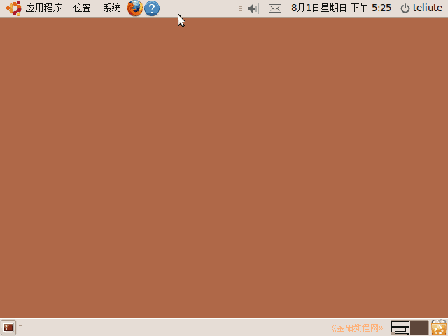
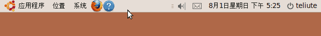
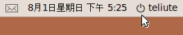

Ubuntu/GNOME 桌面程序指南
作者：TeliuTe 来源：基础教程网
一、桌面和面板 返回目录 下一课GNOME 是一个用于电脑操作的桌面环境系统，包括桌面、窗口、应用程序等；
1、桌面
1）计算机启动完成后，整个屏幕显示的就是桌面，包括面板、工作区、图标等；

2）桌面的上下是两个面板，上面默认已经放了一些按钮，自己还可以添加；

3）桌面中间是工作区，默认是空的，自己可以添加启动器链接，还可以更改桌面背景；
4）常用的关机、回收站按钮都放在面板的右上角和右下角；

5）常用的菜单在面板左上角，分别是应用程序、位置和系统；
本节学习了的基础知识，如果你成功地完成了练习，请继续学习下一课内容；
本教程由86团学校TeliuTe制作|著作权所有
基础教程网：http://teliute.org/
美丽的校园……
转载和引用本站内容，请保留作者和本站链接。